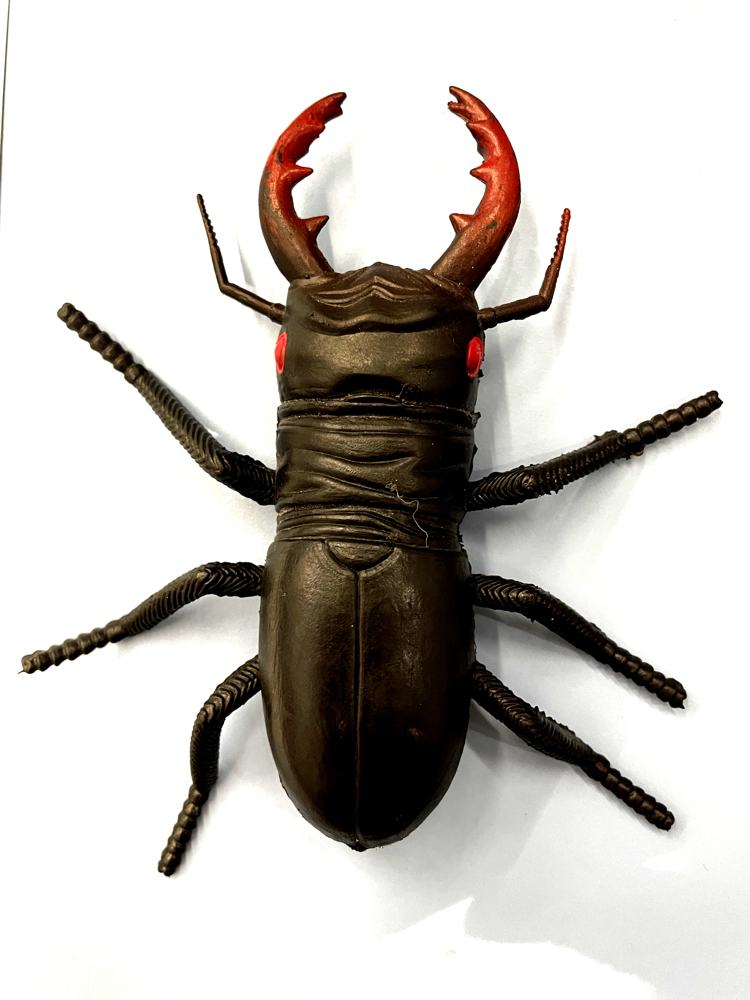
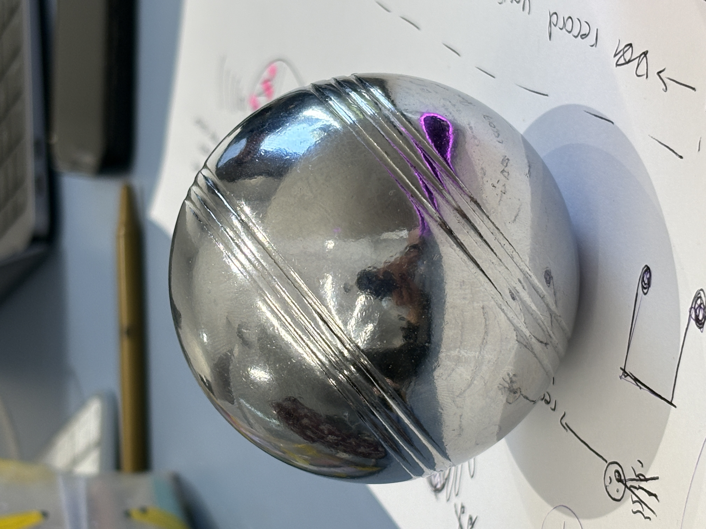

week 1
drag to move around!
beetle


Beetle key: the bettle key has all the functions to a car within its figure. Like normal keys, it can be easily carried around in a pocket. However, another function it has it the "call feature" where you can call the bettle and it comes to where you are as it can move. The pinchers can be squeezed to lock your car, each leg can be switched to unlock your car doors, and squeezing the back two legs unlocks your boot, pressing the wings unlocks your car.
ball


Balled mouse: essentially, it is a mouse that is in the shape of a heavy, metal ball; it's functionalitise are a bit different to a normal mouse. As illustrated in the diagram, you roll the ball around to move your cursor around the screen. You click with the "balled mouse" by banging it on a surface, and you type with it by grasping it three times to activate "keyboard" mode and you type with "drag typing". Key ball: you put the ball into a specifically designed ball-keyhole to unlock a door.
new words
Ambiguitastoleranz: tolerating ambiguity
12 Hour Challenge
1. snoozed my alarm on my phone 2. put my phone on charge 3. turned off my cute little side lamp 4. turned on my headphones 5. started strava on my phone 6. kept checking my time when running 7. switched songs, changed volume and noise cancelling settings with functions on my headphones 8. turned on the stove 9. put on some music on my phone 10. scrolled through insta reels and tiktok 11. took photos of an outfit 12. searched ptv journey on phone 1. tapped on my myki 2. texted some people 3. put my phone on charge with my power bank 4. tapped on my myki 5. scrolled on my phone 6. watched youtube videos 7. studied on my laptop ways to organise my data - used phone (||||||||||) - plug things in aka charge (||) - turning things on and off (||||) - interaction with objects (|||||||)